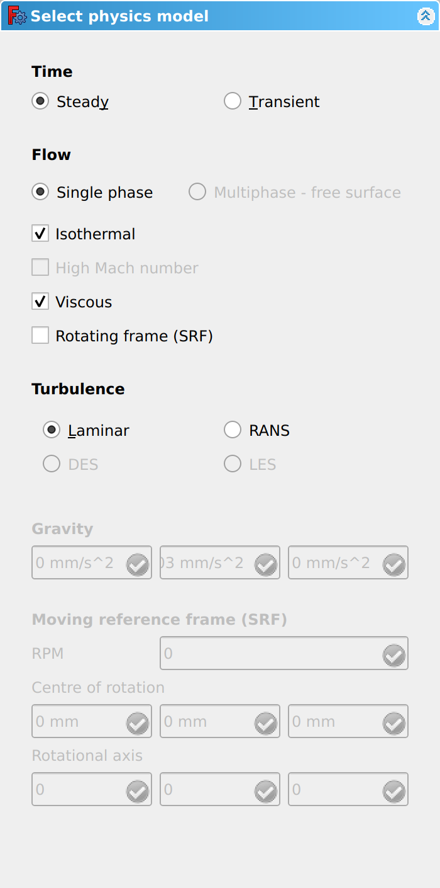
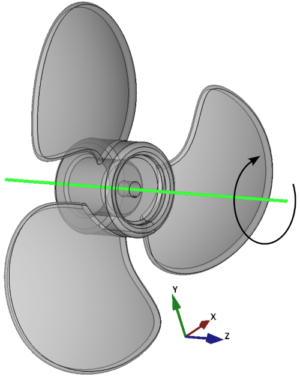

CfdOF PhysicsModel/fr
|
|
| Emplacement du menu |
|---|
| CfdOF → Select models |
| Ateliers |
| CfdOF |
| Raccourci par défaut |
| Aucun |
| Introduit dans la version |
| - |
| Voir aussi |
| Aucun |
Description
La commande  CfdOF Solveur ouvre un panneau de tâches permettant de modifier un objet « Physics Model ». Cet objet contient les données du solveur pour la simulation MFN. Il est ajouté automatiquement lors de la création d'un
CfdOF Solveur ouvre un panneau de tâches permettant de modifier un objet « Physics Model ». Cet objet contient les données du solveur pour la simulation MFN. Il est ajouté automatiquement lors de la création d'un  conteneur d'analyse.
conteneur d'analyse.
Utilisation
- Si nécessaire : activez le
 conteneur d'analyse approprié en double-cliquant dessus dans l'arborescence.
conteneur d'analyse approprié en double-cliquant dessus dans l'arborescence. - Il existe plusieurs façons de lancer la commande :
- Appuyez sur le bouton
 Select models.
Select models. - Sélectionnez l'option CfdOF → Select models du menu.
- Double-cliquez sur l'objet
 PhysicsModel dans l'arborescence.
PhysicsModel dans l'arborescence.
- Appuyez sur le bouton
- Le panneau des tâches s'ouvre. Voir Options pour plus d'informations.
- Cliquez sur le bouton OK pour confirmer et terminer la commande.
Options
Le panneau des tâches propose les paramètres suivants :
{kind=link}

Temps
- Sélectionnez soit Steady State, soit Transient.
- Le régime permanent désigne une simulation dans laquelle les conditions du fluide (température, pression et vitesse) ne varient pas au fil du temps. On peut s'attendre à ce qu'un fluide s'écoulant dans un tuyau lisse atteigne un état d'équilibre, dans lequel la température, la pression et la vitesse actuelles sont identiques à ce qu'elles étaient auparavant et le resteront à l'avenir.
- Si le tuyau comportait une vanne de régulation dont la position (ouverte/fermée) varierait au fil du temps, cela entraînerait une variation de la pression et de la vitesse, et la simulation serait alors classée comme transitoire.
- Il convient de prêter une attention particulière aux simulations pour lesquelles on s'attend à un régime permanent, mais qui s'avèrent en réalité transitoires en raison d'effets inattendus tels que des tourbillons.
Flow
- Sélectionnez soit Single Phase, soit Multiphase - free surface.
- Le mode monophasique concerne un fluide à l'état gazeux ou liquide. Le mode multiphase permet de simuler des cas comportant deux phases ou plus. Le mode multiphase prend également en charge les cas à surface libre, c'est-à-dire l'interface entre deux fluides, comme l'eau liquide et l'air.
- Optionally select Isothermal.
- An isothermal simulation is where the system temperature remains constant, with heat transfer not considered, and the fluid is incompressible.
- Optionally select High Mach number.
- High Mach number refers to fluids at velocities with a Mach number of above 1.0 (speed of sound). This option is for computing compressible supersonic and transonic flow.
- Optionally select Viscous.
- When selected, the viscosity is considered and the turbulence options are presented below. If Viscous is not selected, viscosity is ignored, the viscous terms are dropped from the Navier-Stokes equations and the resulting 'Euler' equations are solved instead. This effectively ignores boundary layers, which can be acceptable in some flow regimes for some purposes. Potential flow is a further simplification on top of that, where irrotational flow is assumed.
- Optionally select Rotating Frame (SRF).
- The Single Rotating Frame (SRF) model is used to simulate a rotating object with no stationary parts, such as a propeller. The whole of the reference frame, the fluid, is rotated around the object's axis, while the object, e.g. a propeller, remains stationary. The rotation of the reference frame is at the same speed as the object would be rotating, and expressed in revolutions-per-minute [rpm].
Turbulence
- Select either Laminar, RANS, DES, LES, depending on the what is available.
- When either RANS, DES or LES are selected, Models can be selected, using the dropdown.
- Please visit the Solver page for more information on the Models.
Gravity
The Gravity input boxes are only available when the non-isothermal option has been selected above.
- Input box for gravity value(s) in X, Y and Z direction.
Moving Reference Frame (SRF)
The following inputs are only available when the Moving Reference Frame (SRF) option has been selected above.
- Input box for RPM.
- Rotational speed of the reference frame
- Input box for the position of Centre of Rotation in X, Y and Z.
- Input box for the Rotational Axis in X, Y and Z.
- Rotation of the object is +ve for clockwise and -ve for anti-clockwise. Remember, the Moving Reference Frame will rotate in the opposite direction to the object's rotation.
- The example propeller below has it's Centre of Rotation on the origin (0, 0, 0). The blades are on the x-y plane, with a Rotational Axis around the z axis (0, 0, -1). The object rotates clockwise, so the reference frame rotational axis is -ve.
{kind=link}

Notes
- You will see from the image of the task panel that some of the options, or input boxes, are greyed out. This is because not all of combination of the options are possible together e.g. Steady State can not handle Multiphase - free surface. To better understand the selections that are possible, and how they relate to different solvers, please visit the Solver page.
- The selections you make here, have an effect on the options and input boxes in other task panels . To assist with workflow, we recommend you complete this task box first, after you have created your Analysis container.
- Menu: Analysis container, CFD mesh, Mesh refinement, Interface dynamic refinement, Shockwave dynamic refinement, Select models, Add fluid properties, Fluid boundary, Initialise, Initialisation zone, Porous zone, Mean velocity force, Reporting function, Cfd scalar transport function, Solver job control
- Démarrer avec FreeCAD
- Installation : Téléchargements, Windows, Linux, Mac, Logiciels supplémentaires, Docker, AppImage, Ubuntu Snap
- Bases : À propos de FreeCAD, Interface, Navigation par la souris, Méthodes de sélection, Objet name, Préférences, Ateliers, Structure du document, Propriétés, Contribuer à FreeCAD, Faire un don
- Aide : Tutoriels, Tutoriels vidéo
- Ateliers : Std Base, Assembly, BIM, CAM, Draft, FEM, Inspection, Material, Mesh, OpenSCAD, Part, PartDesign, Points, Reverse Engineering, Robot, Sketcher, Spreadsheet, Surface, TechDraw, Test